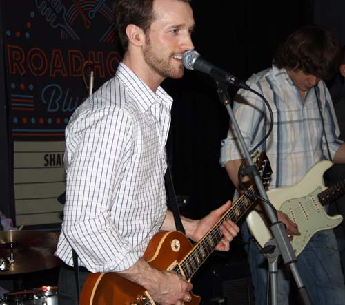

JW-Jones: «Я все еще копирую всех этих парней!»

JW-Jones выпивает немного виски, позволяет нацепить на себя микрофон от диктофона и здоровается с прибывающими в клуб русскими музыкантами из «Jumping Cats». Встреть Джей Дабл-Ю Джоунса на улице, вы бы ни за что не признали в нем канадскую блюзовую звезду - невысокий худощавый брюнет с трехдневной щетиной, открытое лицо студента-отличника, офисная рубашка в клеточку и черные брюки-дудочки. Ему 30 лет, за спиной 6 успешно продаваемых альбомов и сотни выступлений (в том числе с такими легендами как The Fabulous Thunderbirds, , Rod Piazza, Anson Funderburgh и Hubert Sumlin), а его группа в 2010 году получила национальную канадскую награду Maple Blues Award за "Лучший концерт электрического блюза". Мы сидим в столичном клубе «Дом у дороги/Ритм-н-блюз кафе», где должен пройти финальный, третий концерт московских гастролей этого талантливого канадского гитариста. До саундчека у нас есть минут сорок.
- Вчера у тебя был отличный концерт! Спасибо тебе за доставленное удовольствие!
- О, спасибо!
- У тебя есть короткое имя, чтобы я мог обращаться к тебе?
- Да, Джей Дабл-Ю.
- Эээ... Это точно короткое имя?
- Да! (смеётся). Хотя можно еще так: «Эй, ты!» (хохочет).
- У меня ужасный английский - можно мне будет помогать мой коллега?
- Конечно, нет проблем. Может, по 50 «Jack Daniels» для лучшего понимания английского?
- Можно...
- Тогда, может быть, и я начну лучше понимать русский! (смеется).
- Какое самое популярное заблуждение о музыканте из Канады? Это внук лесоруба, влюбленный в хоккей?
- Хм... Что касается музыки, то существует, например, миф о «канадском» блюзе. Многие люди то и дело говорят: «канадский блюз», «канадский блюз», и ты сам слышал этот термин... Но на самом деле нет никакого «канадского» блюза, так же как нет блюза «русского». Русские играют блюз, и канадцы играют блюз. Это - «американская музыка». Есть «техасский» стиль игры, есть «чикагский», но в Канаде никакого особенного «стиля» нет. Просто люди в Канаде «играют блюз» - так будет вернее.
- А с какими мифами о России ты сам ехал в Москву?
- Я ехал с мыслью, что у вас мне придется пить водку. Чистую водку. И нельзя будет разбавлять ничем. Иначе наутро будет сильно болеть голова (смеется). Но оказывается, водку можно разбавлять колой! (хохочет).
- На твоем сайте на титульной странице висит ссылка на видеоновость - ты и твоя команда играете в перерыве между периодами на хоккейном матче под куполом арены (речь идет о выступлении 1 марта 2011 г. в Scotiabank Place — многофункциональном спорткомплексе в Оттаве. Звучал, в частности, инструментал Фредди Кинга "Funny Bone" - прим. АЩ). Так ты все-таки поддерживаешь мифы о канадцах или действительно любишь хоккей?
- Вот в чем дело. Я долгое время пытался организовать такие выступления - концерты во время хоккейных матчей. Это весьма трудно, поскольку хоккейные матчи - очень закрытое мероприятие, и мы - вторая группа, которая смогла такое проделать. Но зато получили непередаваемые ощущения - под тобой гигантская толпа народа, 16 тысяч человек! Так что это отличная возможность представить нашу музыку самым разным людям. Людям, которые о нас никогда не слышали.
- Насколько активно живет канадская блюзовая сцена? Что слушает среднестатистический канадец?
- Канадская блюзовая сцена неплохо себя чувствует. Так, например, у нас много блюзовых фестивалей. В Северной Америке фестиваль N1 - это «Chicago Blues Festival», а фестиваль N2 - это уже наш, в Оттаве. Но все равно - подавляющее число команд играют, конечно, рок, и рок-фестивалей, безусловно, больше. А что касается блюза в Канаде, то скажу так: «Лучшая блюзовая группа» в Канаде сопоставима с «Хорошей блюзовой группой» в Америке (смеется).
- Как появилась идея гастролей в Москве?
- Первая идея пришла с сайта Джона Нэмета (John Nemeth). Там я прочитал новость, что Нэмет намерен приехать в Москву, но не может привезти всю свою группу и собирается играть с «Jumping Cats». Я написал Джону и спросил, как это можно повторить. Все получилось.
- Можем вернуться на 15 лет назад?
- Да, а что мне нужно сказать? (смеется).
- В 16 лет бабушка подарила тебе первую гитару - до этого ты играл на барабанах...
- Да, точно!
- Ты предполагал тогда, к чему это приведет?
- Ну, я всегда получал удовольствие от игры на ударных. Но вся музыка, что я слушал, была музыка «гитарная». Мы часто шутили на концертах: я брал гитару, а гитарист садился вместо меня за установку. Играли вступление песни Алберта Кинга «Blues Power». Ну, вот эти знаменитые фразы: «Та...таа...та-та-а»! (имитирует игру на гитаре). Только вступление - это все, что я знал тогда. Играл эти ноты снова и снова... А потом сел изучать аккорды, гармонические последовательности, просил одолжить инструмент у нашего гитариста и частенько делал так, что его гитара была у меня все дольше и дольше. А взамен учил друга играть на барабанах.
- С тех пор тебе, наверное, много раз приходилось слышать от родителей: « Ну, разве это работа - бренчать на гитаре! Займись чем-то серьезным!»
- Это действительно забавно, потому что вся моя семья по маминой линии - это адвокаты, юристы, политики, врачи. Мои бабушка и дедушка накопили денег - 15 тысяч, чтобы я пошел учиться в университет. Но учеба не задалась - посыпались плохие оценки. Я пошел в колледж - учиться работать на компьютерах, но не прошло и года, как я получил первый контракт на запись в студии. Так что у меня к тому времени не было выбора, чем заниматься. Мой дедушка, кстати, поддерживал меня в моем начинании - дал, например, денег на издание первого CD. Тогда были трудные времена - я даже пошел работать в «Макдональдс»!
- Стоял на раздаче и кричал: «Свободная касса»?
- Да-да, именно так все и было!
- Если бы в 1998 году ты не выиграл конкурс «Battle of the bands», это остановило бы тебя?
- Я все равно продолжил бы играть, но просто не получил бы возможности записаться в студии - это был приз за победу в конкурсе.
- Все начинающие гитаристы 90-х годов мечтали быть похожими на Стиви Рэя Воэна - почему ты не хотел этого?
- Нет, почему же! Мне нравился Стиви, и я пытался копировать его игру. Особенно те «фишки», которые Стиви, в свою очередь, перенял от Алберта Кинга. Но я скоро понял, что все вокруг делают то же самое! И тогда я подумал: что-то мне уже перехотелось копировать Стиви... И я обратился к музыке его брата - Джимми Вону (Jimmie Vaughan). А потом и к Энсону Фандебергу (Anson Funderburgh), да и вообще к техасским ребятам. А дальше - к направлению «вест-коуст», творчеству Литтл Чарли (Little Charlie) и многим другим. Когда я решил полностью переключиться на «вест-коуст»? Это случилось, когда Ким Уилсон (Kim Wilson) выпустил свой альбом «Tigerman».
- Видишь ли ты себя в блюзовой цепочке? Например, в традиции «вест-коуст»?
- Сложно сказать... Я все еще копирую всех этих парней, но стараюсь добавлять что-то свое. На концертах всегда даю себе 5-10 минут, чтобы импровизировать с совершенно незнакомыми вещами.
- Ты планируешь свое будущее? Если да, то какой будет JW-Jones через 30 лет?
- Я продолжу играть блюз, но у меня будет много других музыкальных идей - самых разных влияний на блюзовой основе.
- Последний вопрос - куда после Москвы?
- Сначала вернусь домой, на неделю, в Канаду. Потом продолжу гастролировать по Европе - в апреле играю в Швейцарии, Германии, Бельгии, Нидерландах, Австрии...
- И так далее...
- Да, и так далее! (хохочет).
- Спасибо за интервью!
- Надеюсь, твой диктофон его записал...
19 марта 2011 г.
Беседовал Алексей Щёголев.
Выражаю огромную благодарность Владимиру Русинову («Jumping Cats»), а также Дмитрию Красивову за помощь в организации интервью.